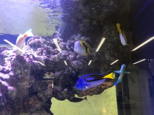
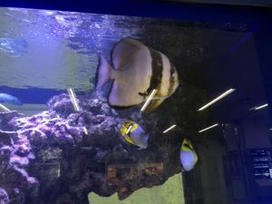

うるがいの話 ある日
最新: 那覇空港うるがいとは 前提知識です
カニの画像をクリックすると『うるがいの話』サイトを表示します|
|
【うるがいの話】 うるがい(ｳﾙｶﾞｲ urugai)とは、『もずくがに』の名前でとても大きくなります。 |
|---|---|
|
|
【Got cat カミマヤーの話】 たながー（ﾀﾅｶﾞｰtanagaa）とは手長えびのことで、何種類かあり大きいのは車 エビぐらいになります。 |

|
【ぶながぁの話】 ぶながー(bunagaa)とは、赤い髪の毛、赤い身体、そして身長は１ｍ２０ｃｍ ぐらい、川の蟹を食べているの目撃された。場所は沖縄県国頭郡大宜味村のと ある村僕の隣近所に住んでいる爺さんから、聞いた話です。 |
|
|
【ギーマの話】 ギーマ(giima)とは、山原の里山に咲くスズランに似た、 花を付けます。実は食べられます、 気が付くと口の周りが紫になっています。 |
2021年11月07日 (日）那覇空港
14:59
 
２年ぶりに那覇空港に入る。コドモを迎えるだが、前回と違い今回は駐車場に
止める。駐車場に入る路上では、数台の車が２車線の左側にパーキングしてい
た、ここで到着者を待っているようだ。なるほど、ただ３０分以内だと駐車料
金は無料で、今回は２０分間の駐車だったので無料になった。夜８時前だった
が空港はそこそこ人でごたごたしていた。それでも２年前とは大違いである。
天ぷらや刺し身にしたら美味いだろうなと、水槽の魚を眺める。コドモは移動
でぐったり疲れていた。いまだ、空港間の高速バスが利用できないため２時間
のレンターカーで高速自動車を運転ているとのこと。もう、老人にはできない
な。１０月２６日のステップ１から放置していた、プログのメンテナンスを朝
から作業やっと終了する。最後に晴れて良かった！、今日運動会を予定してい
るところが多々あったようだから。